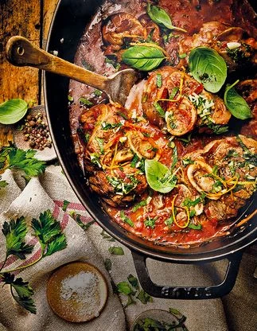
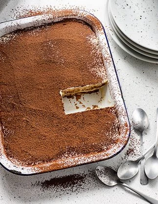
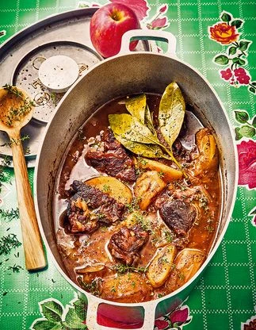

GourmeTech
×
Accueil
Ajouter une recette
Mes favoris
À propos
Rechercher
Catégorie
Entrée
Plat
Dessert
Temps de préparation
Rapide (>30min)
Moyen (30-60min)
long (>60min)
Difficulté
Facile
Moyen
Difficile
❤
blanquette de poulet
Plat
30 min
Facile
Voir la recette

❤
Osso-bucco
Plat
105 min
moyen
Voir la recette

❤
Tiramisu
Déssert
25 min
Facile
Voir la recette

❤
joue de boeuf
plat
60 min
Difficile
Voir la recette